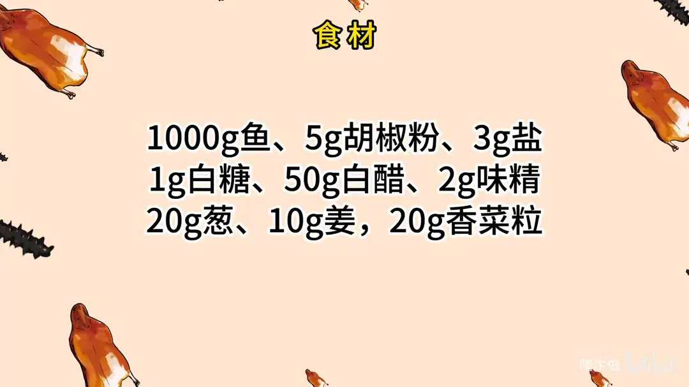
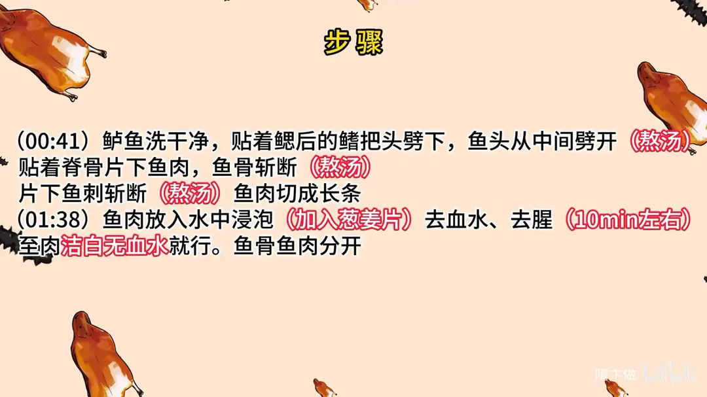
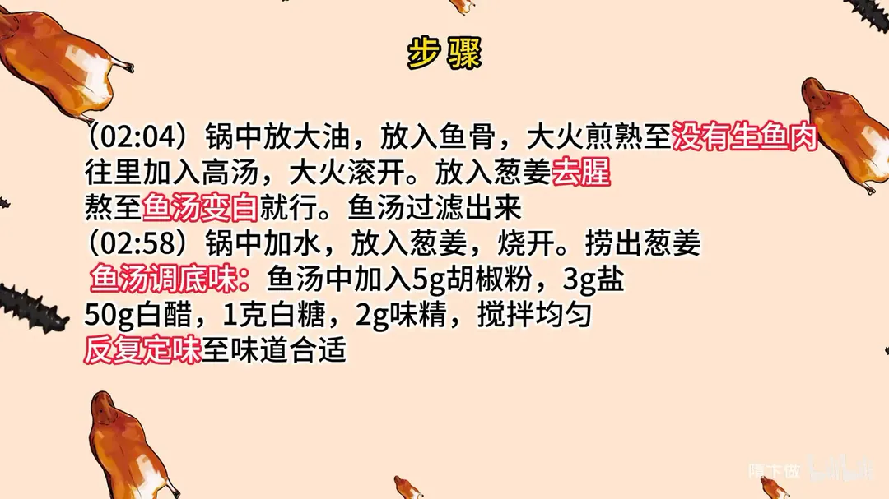
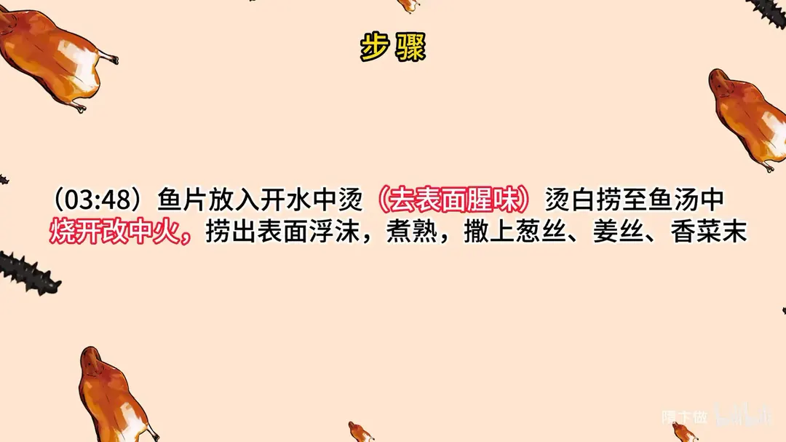
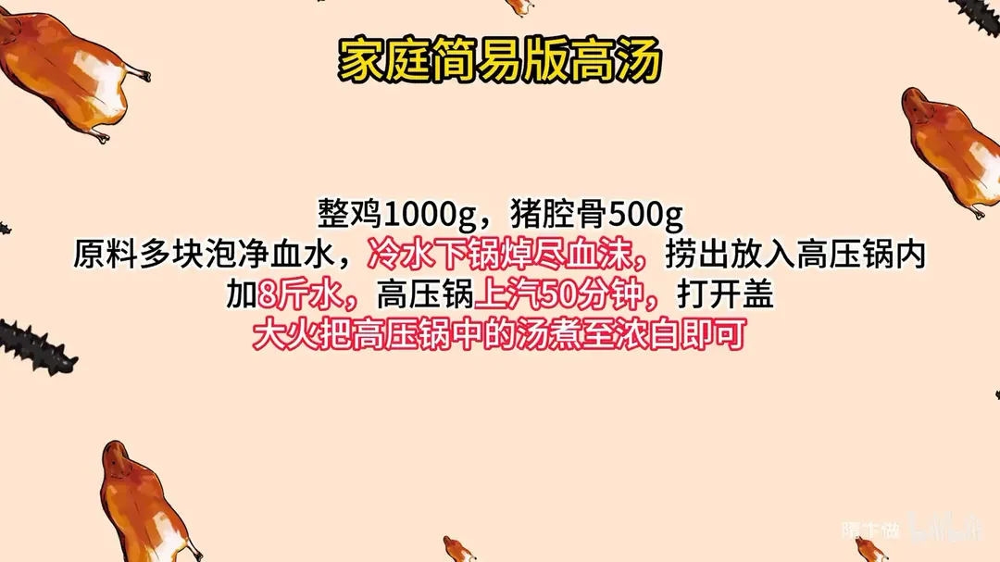

醋椒鱼
隋卞一做。1000g 鱼贴脊骨片下鱼肉切长条，加葱姜片泡水 10 分钟去血水去腥；鱼骨鱼头煎透冲高汤熬白。底味靠 5g 胡椒粉、50g 白醋、3g 盐、1g 白糖、2g 味精，鱼片开水烫白后入汤，中火煮熟撒葱姜香菜。
原视频：https://www.bilibili.com/video/BV1iC4y1y7Mz
食材
鱼、胡椒粉、白醋 等 9 样
| 类别 | 用料 | 用量 |
|---|---|---|
| 主料 | 鱼 | 1000g |
| 调料 | 胡椒粉 | 5g |
| 调料 | 盐 | 3g |
| 调料 | 白糖 | 1g |
| 调料 | 白醋 | 50g |
| 调料 | 味精 | 2g |
| 配料 | 葱 | 20g |
| 配料 | 姜 | 10g |
| 配料 | 香菜粒 | 20g |
步骤
- 取肉：鱼洗干净，贴着鳃后的鳍把头劈下，鱼头从中间劈开（熬汤）；贴着脊骨片下鱼肉，鱼骨斩断（熬汤）；片下鱼刺斩断（熬汤）；鱼肉切成长条。
- 泡水：鱼肉放入水中浸泡，加入葱姜片，去血水、去腥，10 分钟左右，至肉洁白无血水就行；鱼骨鱼肉分开。
- 熬鱼汤：锅中放大油，放入鱼骨，大火煎熟至没有生鱼肉，往里加入高汤，大火滚开；放入葱姜去腥，熬至鱼汤变白就行；鱼汤过滤出来。
- 调底味：锅中加水，放入葱姜，烧开，捞出葱姜。鱼汤调底味：鱼汤中加入 5g 胡椒粉、3g 盐、50g 白醋、1 克白糖、2g 味精，搅拌均匀，反复定味至味道合适。
- 汆鱼片：鱼片放入开水中烫，去表面腥味，烫白捞至鱼汤中；烧开改中火，捞出表面浮沫，煮熟，撒上葱丝、姜丝、香菜末。
小贴士
- 家庭简易版高汤：整鸡 1000g、猪腔骨 500g，原料多块泡净血水，冷水下锅焯尽血沫，捞出放入高压锅内，加 8 斤水，高压锅上汽 50 分钟；打开盖，大火把高压锅中的汤熬至浓白即可。
讲解要点
难度：★★★☆☆（熬汤不难，难在醋与白胡椒的比例——多一分就盖住鱼味）
为什么这么做
- 贵的是大黄鱼，不是做法：999 的价在鱼上；用鲈鱼同样肉嫩刺少，家庭做完全能出这个味。
- 头和骨都留着熬汤：醋椒鱼喝的是「酸辣」后面那层鱼的厚味，没有鱼汤垫底，就成了一碗酸辣水。
- 鱼骨要煎到没有生肉：纯鱼肉煎到微微发黄没关系，煎透了再冲高汤大火滚，汤才白、才香。
- 锅里另加大油：动物油让汤更浓更白，也和鱼香更贴。
- 鱼片用葱姜水泡 10 分钟：血水是腥味源头，泡到肉洁白没有血色；草鱼、鲤鱼这类淡水鱼土腥重，更得泡。
- 醋和胡椒必须边加边尝：这是本菜的全部难点——醋多了尝不出胡椒，胡椒多了直接难吃，而且比例不能压过鱼肉，只能一点点试。
- 鱼片烫到泛白就捞：鱼片薄，进汤后只烧开、转中火，全白即熟；久煮就散。
容易翻车
- 底味别一次下满，先给七成再逐次补；克数只是参考，汤量、鱼种不同都要跟着调。
- 葱姜煮出味后要捞出，留在汤里会发浑。
- 鱼头、鱼骨要斩断煎透，整块下锅出不来味。
- 鱼片下锅后别用勺乱搅，撇沫、晃锅就行，一搅就碎。
- 泡水时间不够，怎么调味都压不住腥味。
热评补充
- 片尾的调料克数只是参考范围，同样的量换个鱼、换个汤量味道就不一样，最终还是要边尝边补。
原片尾卡





原片文案
AI 字幕校准稿
我快受不了小李了，从翰林书院回来，一天给我发一个微信，问他们那个 999 的醋椒大黄鱼怎么做的。醋的酸，鱼肉的香，加上胡椒粉的辣，好多传统菜的师傅现在都不做了。这个醋椒鱼不好做，特别是调味——醋多一点就尝不出胡椒粉的味，胡椒粉多一点就特别难吃，而且这两个比例还不能压过鱼肉。那咱今天就给大家做一个。
这个醋椒鱼其实是个传统菜，他们卖 999 是因为用的特别好的大黄鱼，咱们用的是鲈鱼。收拾干净之后把头取下来，贴着鳃后边那个鳍切下来，中间劈一刀；鱼肉贴着脊骨取下来，鱼骨斩断，一会做汤用；然后把这个刺给它去掉，改成条，切成长条大片都可以。
切好的鱼肉搁水里，放上两片葱姜，去去这鱼的腥味，泡一泡血水。在家选草鱼、鲤鱼这类常见的淡水鱼，汤里土腥味比较重，更得拿葱姜水泡一下。就看这肉比较洁白、没有过多血色就可以了，一般泡 10 分钟，10 分钟是一个基础。
火候完了，咱们开始熬鱼汤。锅里放上干净油，再放点大油，锅烧热，把鱼骨放进去，开大火把里面的鱼块扒拉开。因为是纯鱼肉，稍微有点发黄也没关系，目的是给它煎熟；你看鱼肉都变白了、没有生鱼肉，咱们就往里加汤——这是刚才熬的高汤，大火滚开，让它的味道相融，里边放葱姜去腥。再熬一会儿，慢慢看那个汤就会变白，变白了就可以了。把这汤过滤出来，这就是做这个菜的底汤。
锅里做上干净水，放入葱姜。趁着水烧开的时候，咱们把旁边这个鱼汤调一个底味：胡椒粉、味精、白糖、白醋。来，尝一下调味儿，醋的来点儿……胡椒粉带不带？这个味道是非常不好的，我尝一下。嗯，这味儿行了可以了，我会把比例给你们写到片尾。
葱姜煮入味之后就不要了，看着比较利索。开大火烧开，鱼头扔在开水里烫一下，主要烫一下表皮那个粘液腥味。鱼肉一泛白就捞出来，直接捞到鱼汤里边，把上面的沫子撇一下。不用着急，烧开之后可以改中火，基本上全白应该就熟了。这会儿放点姜丝、葱丝，熟了出锅。
来尝尝。酸酸的，辣辣的，跟平时喝的酸辣汤不一样——酸辣汤的酸味和辣味还有白胡椒，唰一下就过去了；这个喝下去是鸡汤和鱼的那种香味混在一起，所以味道喝着特别厚。是好喝的，而且这个汤特别适合冬天，又酸又辣还滋补。
关键一直是把汤选好、把鱼选好，还有一个胡椒粉很关键。这道菜 999，在咱们这儿只用一个点赞就能学会。在家学一学。